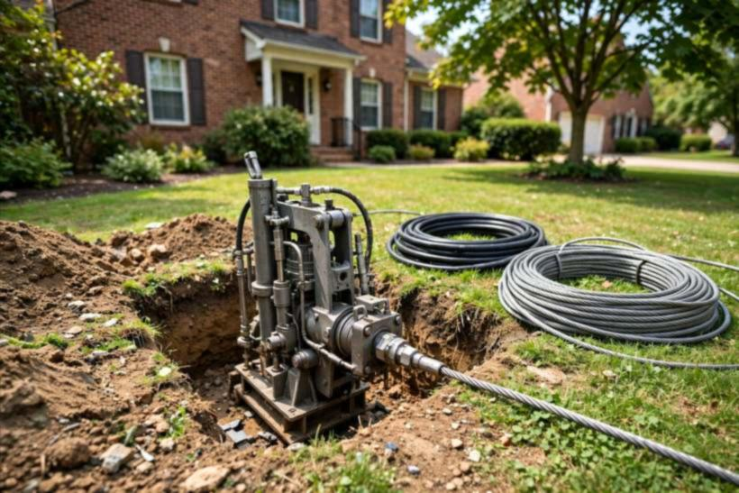

Full sewer lateral replacement in Belleville, Illinois
Sewer Line Replacement in Belleville, IL for Full Lateral Renewal
Sewer line replacement renews the lateral from the building to the main, where camera findings show damage along the line rather than in a single section. Full renewal differs from section repair, which addresses a limited length while sound sections remain. Hinkle Plumbing Company reviews camera findings, property-line position, and replacement scope before work begins.
1610 W Main St, Belleville, IL 62220(618) 677-6556Monday through Friday, 8:00 AM to 4:30 PM. Closed Saturday and Sunday.
What full replacement covers
Sewer line replacement work in Belleville
Full replacement renews the lateral length, with excavation, pipework renewal, and restoration planned around camera findings and the line layout. Camera review defines the extent of damage and the length that needs renewal, so scope is not assumed from symptoms alone. For the diagnostic step, see sewer camera inspection in Belleville, IL and how footage and locate marks define renewal length.
Widespread cracks and breaks
Where camera footage shows cracks and breaks along the lateral, rather than in one section, full renewal is discussed. The review checks the extent of damage along the line, with renewal length set from footage and locate marks.
Collapsed and offset lengths
Collapsed sections, severe offsets, and bellies that disrupt flow can point toward full renewal where section work cannot restore alignment. Camera findings show the affected lengths, and renewal scope follows the line layout and damage pattern.
Root-damaged laterals
Laterals with root intrusion at many joints can show joint damage along the line, with flow restricted at several points. The review checks intrusion patterns on camera, with renewal discussed where joint damage extends beyond section repair.
Clay and cast-iron renewal
In older homes, clay laterals and cast-iron drains are checked for joint wear, cracks, and root entry along the line, as era-typical review. Where damage extends along the lateral, renewal replaces materials with pipework suited to the layout.
Property-line and City program review
Renewal length and property-line position are reviewed together, since the outer section beyond the property line carries separate arrangements. The City of Belleville Sewer Lateral Repair Program is a City-administered program; readers should check current City program details.
About Hinkle Plumbing Company
Full lateral renewal from a Belleville plumbing company
Hinkle Plumbing Company reviews full lateral renewal in Belleville, IL where camera findings show damage along the line, with section repair kept as a separate, limited scope. Renewal length, property-line position, and surface needs shape the work.
Hinkle Plumbing Company is based at 1610 W Main St, Belleville, IL 62220, and reviews full sewer lateral renewal guided by camera footage and locate marks. The Google rating is 5.0 from 3 reviews. Monday through Friday, 8:00 AM to 4:30 PM. Closed Saturday and Sunday. Clay-rich soil that shifts with moisture changes can stress buried lines, and line depth and surface cover affect excavation scope. City Code describes the owner as responsible for the lateral from the building to the main, including under streets and rights-of-way.

How we workA lateral trench and new pipework reviewed for full renewal in Belleville, Illinois.
How full replacement proceeds
From camera findings to renewal and restoration
The steps flex with the condition of the job, but the sequence stays the same.
Camera review of the full lateral
Camera footage and locate marks review the lateral from the building to the main, showing damage extent along the line. Findings define whether renewal length covers the full lateral or a longer section that section repair cannot address.
Renewal length and method discussion
Renewal length, method, and access are discussed from camera findings, with open-cut renewal and trenchless options reviewed separately. Property-line position, soil, and surface cover shape method choice and excavation planning.
Excavation and utility review
Existing utilities are checked before excavation, with access points, soil conditions, and surface finishes reviewed for the renewal length. Excavation planning follows locate marks, with restoration needs discussed before digging begins.
Lateral renewal work
The old lateral is removed or bypassed as the method requires, and new pipework is fitted along the renewal length with joints checked. Alignment, slope, and flow are reviewed as fitting proceeds, with connections checked at each end.
Flow testing and surface restoration
After renewal, flow is tested through fixtures and camera review confirms alignment and joints along the new length. Surface restoration follows excavation scope, with findings discussed before the work area is left.
Renewal methods
Open-cut and trenchless renewal compared
Renewal method follows camera findings and line condition, with open-cut renewal offering direct access along the full length. Trenchless renewal limits surface opening but suits only lines that camera review shows as eligible for lining or bursting. For trenchless detail, see trenchless sewer repair in Belleville, IL and the eligibility limits that camera findings set.
Open-cut full renewal
Open-cut renewal excavates along the lateral, removes the old line, and fits new pipework with direct access to joints and alignment. Surface opening follows the renewal length, with restoration planned for driveways, landscaping, and paved areas.
Pipe bursting renewal
Pipe bursting pulls new pipework through the old line while breaking the old pipe outward, limiting surface opening to access points. Camera findings gate eligibility, since collapsed lengths and severe offsets can rule out bursting.
Cured-in-place lining
Lining fits a resin liner inside the existing lateral, forming a new inner surface without full excavation. The line needs to suit lining on camera review, with bellies, offsets, and collapsed sections reviewed as limits on eligibility.
Alignment and slope control
Renewal sets alignment and slope so wastewater flows toward the main without pooling in low sections. Alignment is checked during fitting and after completion, with camera review confirming the new line layout.
Connection renewal at each end
Connections at the building and at the main are renewed or reseated as part of full renewal, with joints checked for alignment and seepage. Branch connections along the lateral are reviewed, with needs discussed before fitting is complete.
Restoration after renewal
Restoration returns driveways, landscaping, and surfaces affected by excavation to a finished state, with scope following the renewal length and surface types. Restoration needs are discussed before work begins, so surface scope is part of renewal planning.
Common patterns
Patterns in full lateral renewal calls
The patterns below describe common renewal calls in general terms, without job details, to show how widespread damage, method choice, and restoration shape full renewal scope. Each pattern starts with drainage signs and moves through camera review toward a renewal length.

Camera showing damage along the line
A common call describes backups and slow drainage that return after clearing, with camera footage showing cracks and joint damage at several points along the lateral. The review checks damage extent, alignment, and low sections, with locate marks defining the length that needs renewal. Open-cut and trenchless methods are reviewed separately, with eligibility following camera findings and line condition. Renewal replaces the defined length, with flow and joints checked and surfaces restored before the work is complete.
Lateral failure under driveway and landscaping
A common call describes drainage faults where the lateral runs under a driveway and planted areas, with surface opening a concern for the homeowner. Camera review defines damage extent and renewal length, with access points and surface types reviewed for method choice. Trenchless options are checked against camera eligibility limits, while open-cut renewal is discussed where the line does not suit trenchless work. Method, excavation, and restoration scope are discussed together before renewal work begins.
Signs to review
Signs that may point toward full renewal
Most calls fall into a few patterns. Knowing which pattern applies decides what the visit involves.
Damage at several points on camera
Camera footage showing cracks, offsets, and joint damage at several points can point toward renewal rather than section repair. The review checks damage extent along the line, with renewal length set from footage and locate marks.
Repeated backups after clearing
Backups that return after clearing can point to lateral damage that clearing does not fix, such as offsets, bellies, or collapsed lengths. Camera review checks the lateral for structural faults, with renewal discussed where section work cannot restore flow.
Offsets and bellies along the line
Severe offsets and bellies shown on camera can disrupt flow and collect debris, pointing toward renewal where alignment cannot be restored by section work. The review checks offset and belly extent, with method choice following camera eligibility findings.
Older lateral materials with joint wear
Clay and cast-iron laterals in older homes are checked for joint wear, cracks, and root entry that extend along the line. Where wear extends beyond a single section, renewal is discussed, with method and restoration scope reviewed together.
Cost factors
What shapes full renewal scope
Cost follows renewal length, method, depth, and restoration scope.
Open-cut renewal in open ground
Where the lateral runs through open ground, scope centers on excavation length, pipework renewal, and restoration of lawn and soil surfaces. Access, soil conditions, and renewal length shape the work, with surface scope limited to the trench line.
Renewal under driveways and paved areas
Where renewal runs under driveways or paved areas, excavation and restoration scope grows with surface type and the length under cover. Method choice, access points, and surface finishes are reviewed, with restoration discussed before work begins.
Trenchless renewal where eligible
Where camera findings show the line suits trenchless renewal, scope centers on access points, lining or bursting work, and limited opening. Eligibility, line condition, and renewal length are reviewed, with open-cut scope discussed where trenchless work does not fit.
Reviews from Google
What Customers Say on Google
★★★★★
“Very prompt and responsive, the worker was friendly and informative! Will use this company again!”
★★★★★
“Don did an outstanding job for me when I needed him and highly recommend his business”
★★★★★
“Rated 5.0 out of 5 across 3 Google reviews, all five stars.”

When is full replacement discussed instead of section repair?
Full replacement is discussed where camera footage shows damage along the lateral, rather than damage limited to a joint or short length. Section repair fits limited damage, while renewal fits widespread cracks, offsets, bellies, and joint damage that section work cannot resolve. Camera findings, lateral condition, and property-line position guide the discussion, with renewal length set from footage.
Does trenchless renewal suit every sewer lateral?
Trenchless renewal suits only lines that camera review shows as eligible for lining or bursting, with alignment and condition reviewed for the method. Collapsed pipe, severe offsets, and bellies can rule out trenchless work, so camera review gates eligibility before method choice. Where trenchless work does not fit, open-cut renewal is discussed, with excavation and restoration scope reviewed together.
What role does the property line play in replacement?
Property-line position establishes where damage sits relative to the boundary, which matters for renewal length and for arrangements covering the outer section. Camera locate marks show damage position along the lateral, so renewal scope can be set with the boundary in view. Readers should check current City program details for the City of Belleville Sewer Lateral Repair Program and its current terms.
What affects the cost of sewer line replacement?
Cost is shaped by renewal length, method, depth, access, soil conditions, and surface restoration needs after excavation. Open-cut renewal, trenchless renewal, and repairs under paved surfaces each carry different scope factors. Call (618) 677-6556 to discuss camera findings and layout, so scope factors for the job can be reviewed without figures assumed in advance.
Related services
Other Plumbing Work We Handle

Sewer Line Repair in Belleville, IL
Section repair for damaged joints and lengths where sound lateral sections remain in place.Trenchless Sewer Repair in Belleville, IL
Lining and bursting renewal with limited surface opening, where camera findings show eligibility.
Sewer Camera Inspection in Belleville, IL
Camera footage and locate marks that define damage extent and renewal length before work.Mon–Fri 8:00 AM–4:30 PM
Discuss sewer line replacement in Belleville, IL
Call Hinkle Plumbing Company at (618) 677-6556 to discuss sewer line replacement in Belleville, IL, including camera findings, renewal length, and replacement scope. Monday through Friday, 8:00 AM to 4:30 PM. Closed Saturday and Sunday.
Talk with the local team
Request Sewer Line Replacement
Call (618) 677-6556 during office hours, Monday through Friday, 8:00 AM to 4:30 PM. Tell us what is happening and we will talk through the next step.